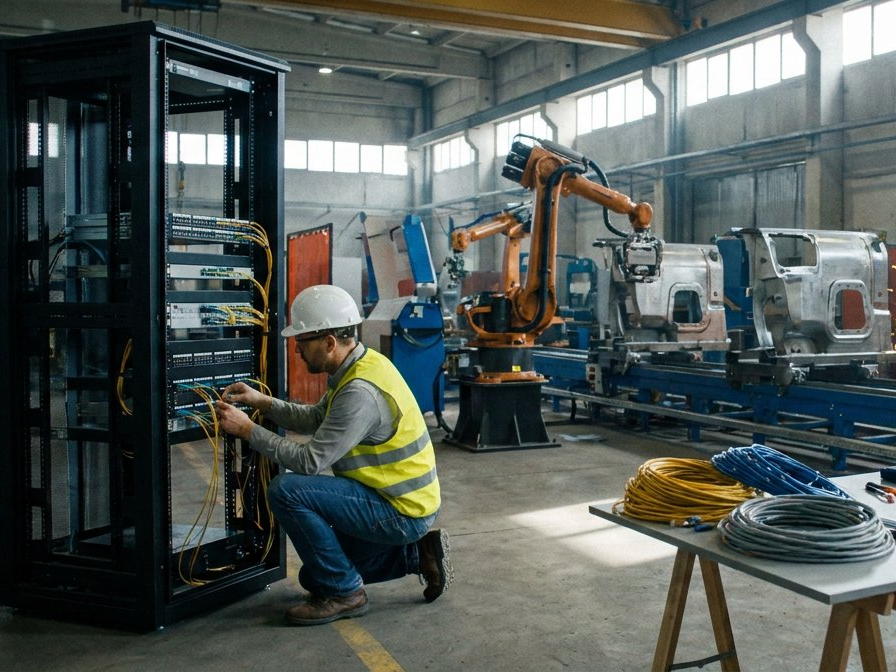
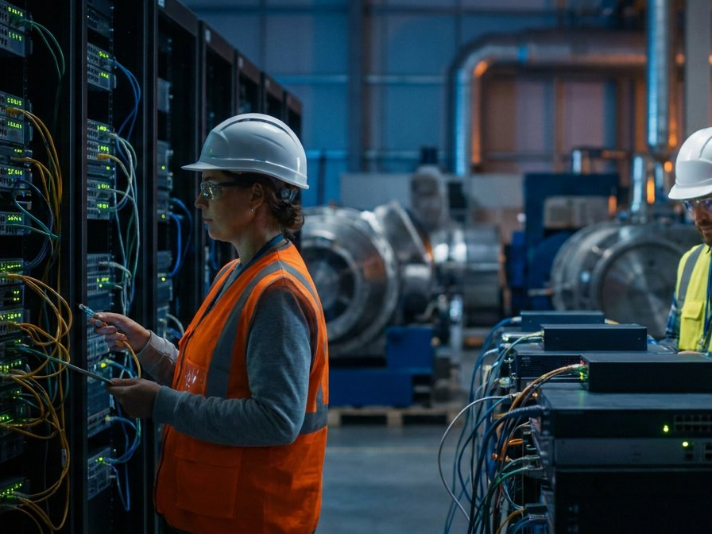
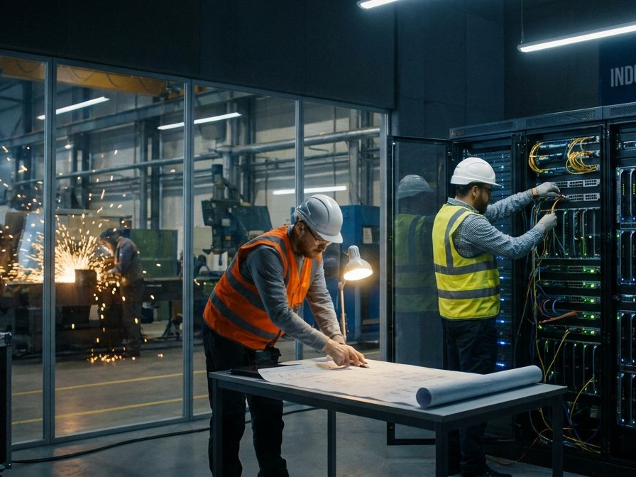

Manufacturers rely on connected networks, production applications, and secure access to design files and operational data. DTCloudOn provides managed IT services and cybersecurity support to help manufacturing companies strengthen their infrastructure, reduce technology disruptions, and plan for growth.
From office-to-factory network connectivity to secure cloud collaboration, device management, and IT procurement, we help manufacturers improve the technology supporting daily operations. We serve manufacturing businesses throughout Texas, including the Houston area and surrounding communities.
Get specialized manufacturing IT support →
Unplanned IT disruptions can affect scheduling, production reporting, and coordination between plant systems and office teams. Our managed IT services focus on proactive maintenance, network reliability, user support, and security improvements tailored to your manufacturing environment.

Manufacturing environments often combine business IT with operational technology (OT), such as connected machinery and industrial control systems. DTCloudOn can help evaluate network architecture, access management, device security, backup planning, and support requirements as part of a practical IT roadmap.
Where industrial equipment and control systems are involved, changes should be coordinated with plant operators and equipment vendors to respect safety, availability, and production requirements. Our approach is to scope the technology environment and develop support plans that match your operations.
Start building your IT plan →
Contact DTCloudOn to see how we can strengthen and protect your manufacturing IT infrastructure today.
Contact Us →Manufacturing IT services include secure networking, endpoint and server management, user support, cybersecurity, backup planning, and cloud connectivity. These services support communication between production teams, engineering offices, and business systems.
IT support can help connect offices, warehouses, and production facilities through managed networks, identity controls, and appropriately configured cloud tools. Each site’s operational technology and production requirements should be assessed before changes are made.
IT outages can disrupt production scheduling, reporting, and communication. Preventive maintenance, backups, monitoring where contracted, and incident response planning can reduce disruption risks, although no provider can guarantee uninterrupted production.
IT providers can support the networks, servers, access controls, and data platforms connected to manufacturing automation. Direct changes to industrial control equipment should be scoped carefully and coordinated with qualified plant personnel and equipment vendors.
Cybersecurity measures such as network segmentation, multifactor authentication, access controls, patch planning, and backup protection help reduce exposure to ransomware and unauthorized access. Manufacturing OT environments may require additional safety and availability considerations.
IT procurement helps manufacturers select compatible workstations, servers, networking equipment, and other technology. Planning for lifecycle, security requirements, compatibility, and vendor support can reduce deployment and maintenance challenges.
As a manufacturer adds users, equipment, or facilities, its IT architecture can be reviewed and expanded through capacity planning, scalable network designs, cloud services, and standardized security configurations.
Managed IT support can handle routine maintenance, troubleshooting, user access, and infrastructure planning so manufacturing personnel can spend more time on production, quality, and delivery priorities.
Discuss secure factory connectivity, managed IT services, cybersecurity, and infrastructure planning for your manufacturing business.
Request a Free Consultation →